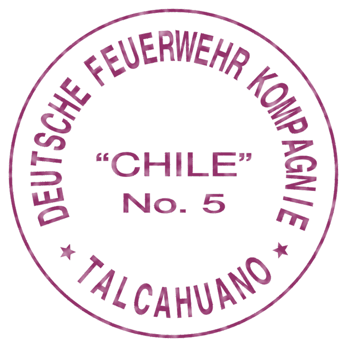
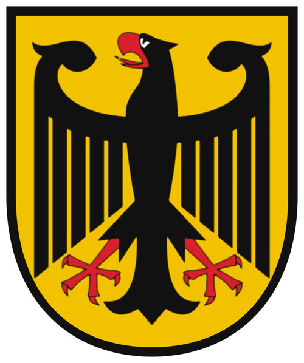
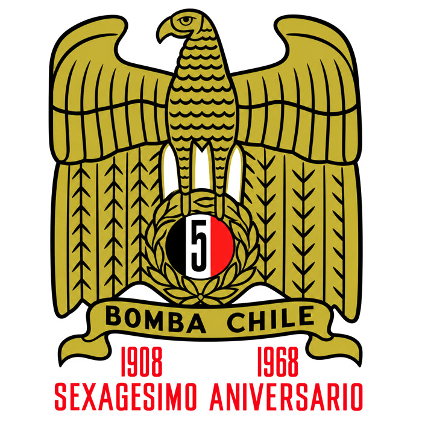
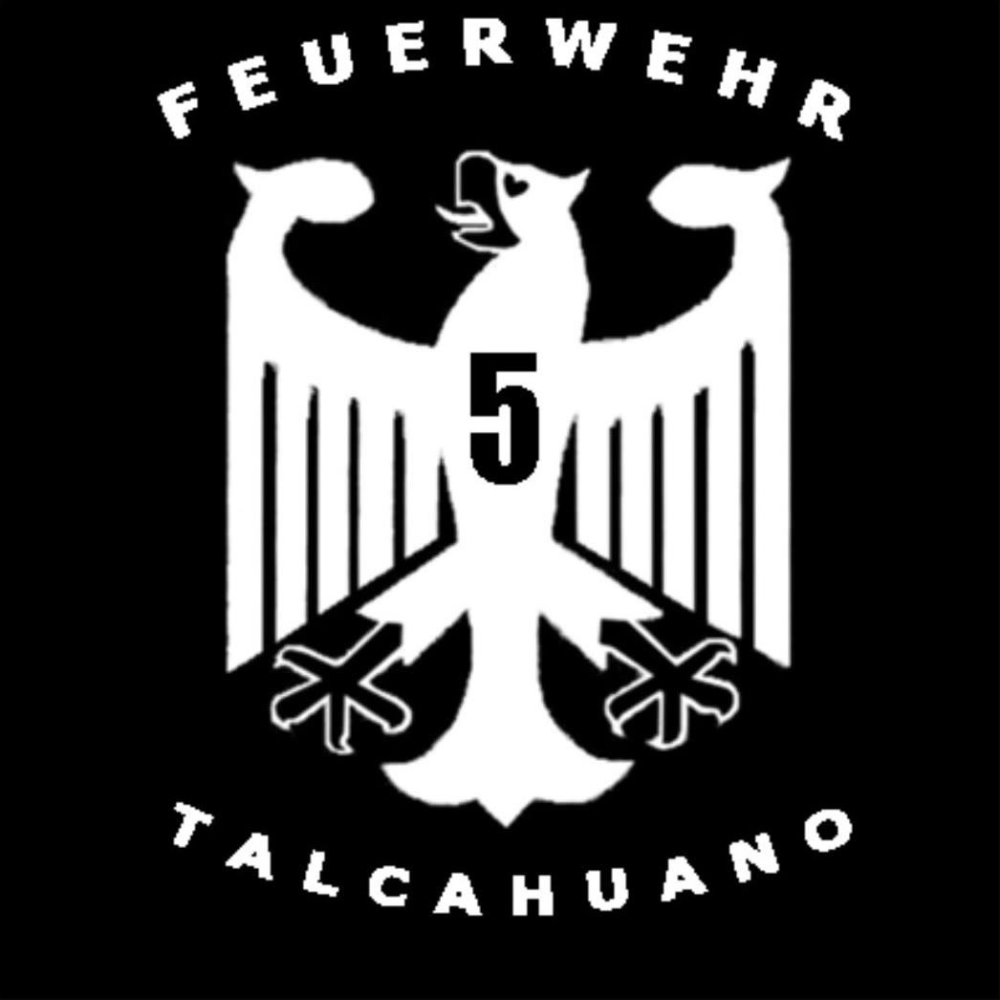
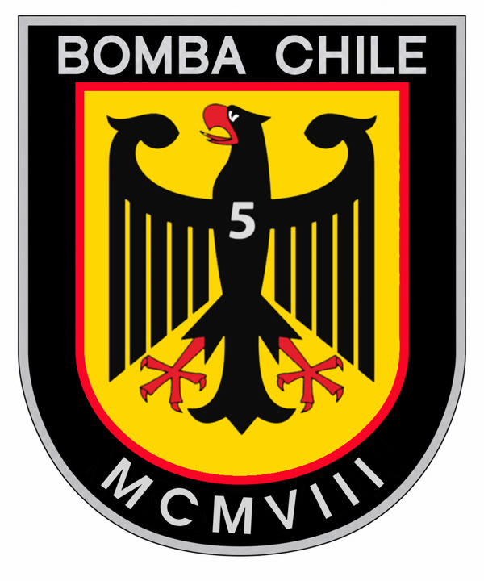
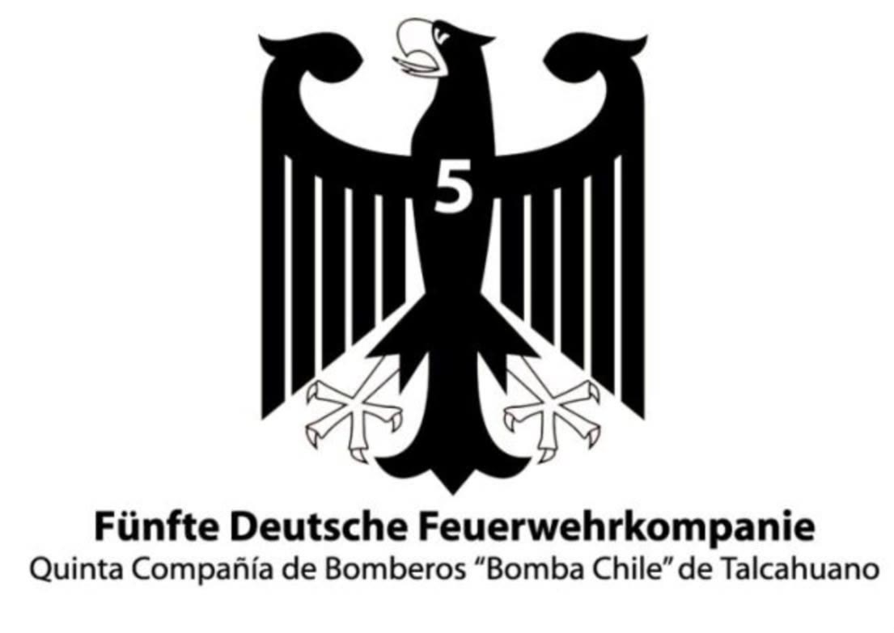
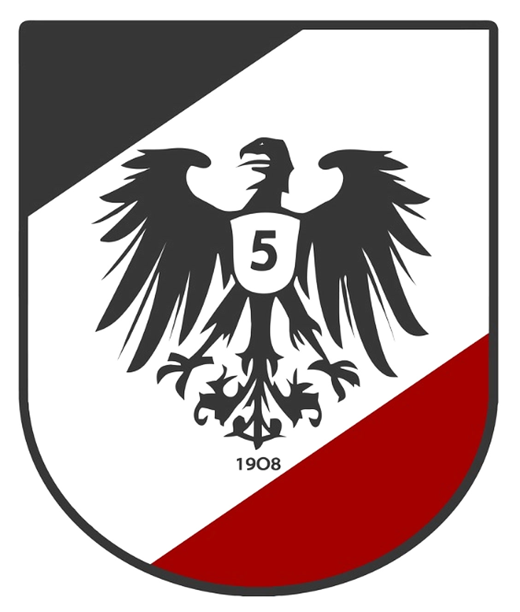
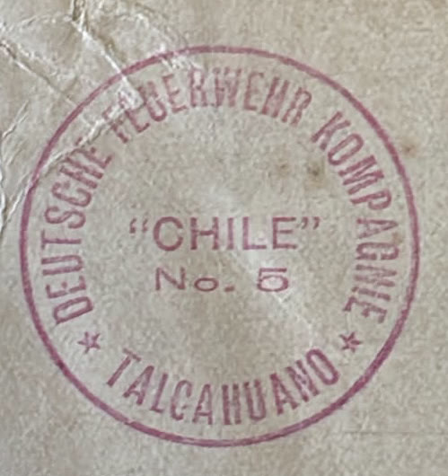
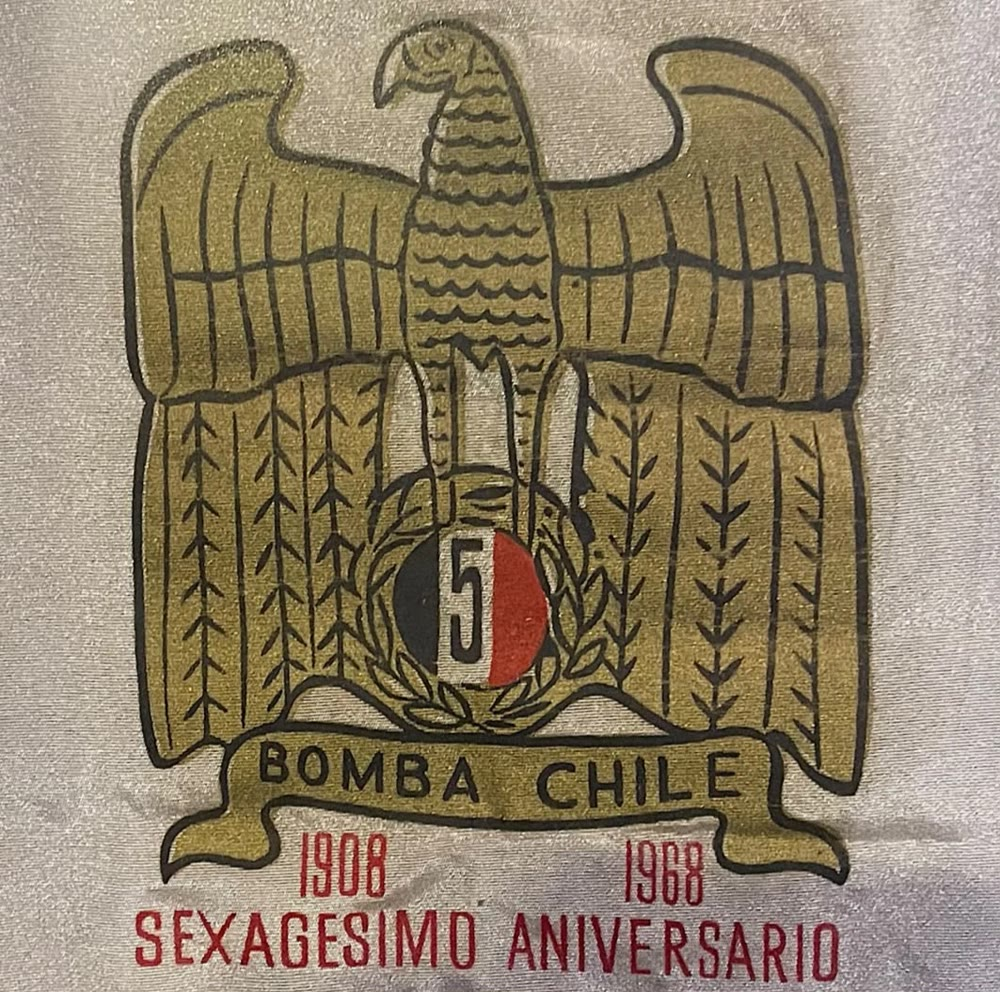
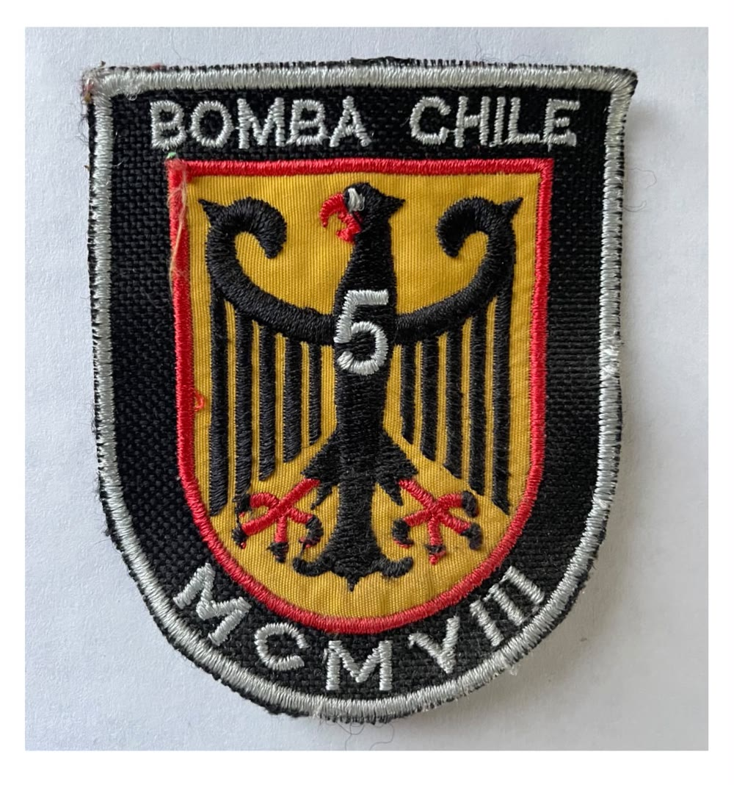

Desde 1908, los quintinos han tenido distintos emblemas. Con veleros, águilas, en amarillo o en tricolor, todos dicen lo mismo: aquí está la Quinta.
| Escudo | Descripción |
 | Timbre El primer timbre de la compañía, con su nombre fundacional: Deutsche Feuerwehr Kompagnie «Chile» No. 5, Talcahuano. Se usó para firmar las cartas hasta, aproximadamente, la década de 1950. |
 | Escudo Corona naval de Talcahuano, los colores de la Alemania imperial y un ancla. Aparece en el diploma de Miembro Honorario de Ricardo Setz Schlegel, fechado el 29 de enero de 1960. |
 | Escudo El águila alemana negra sobre fondo amarillo. La llevaban la Magirus Deutz de 1954 y la Berliet-Camiva «Lili Marlen», y estuvo en la Primera Convención de la CCCHAB (1978). |
 | Conmemorativo Emblema conmemorativo de los 60 años de la compañía, en 1968. |
 | Transición Logo de transición, usado en 2007, antes del centenario: el águila blanca con el 5 sobre fondo negro, con Feuerwehr arriba y Talcahuano abajo. |
 | Conmemorativo Parche bordado conmemorativo de los 100 años, en 2008, con el águila del escudo amarillo y el año de fundación en números romanos. |
 | Transición Logo de transición, usado entre 2008 y 2010: el águila con el 5 y la leyenda Fünfte Deutsche Feuerwehrkompanie, Quinta Compañía de Bomberos «Bomba Chile» de Talcahuano. |
 | Escudo Águila negra con el 5 sobre franjas diagonales negra, blanca y roja. En uso entre 2011 y 2022, cuando lo reemplazó el escudo actual. |
 | Escudo El águila con el 5 sobre los colores de la compañía, con la leyenda Deutsche Feuerwehrkompanie, Bomba Chile, 1908 y Talcahuano. Vigente desde el 20 de septiembre de 2022. |
Fotografías


